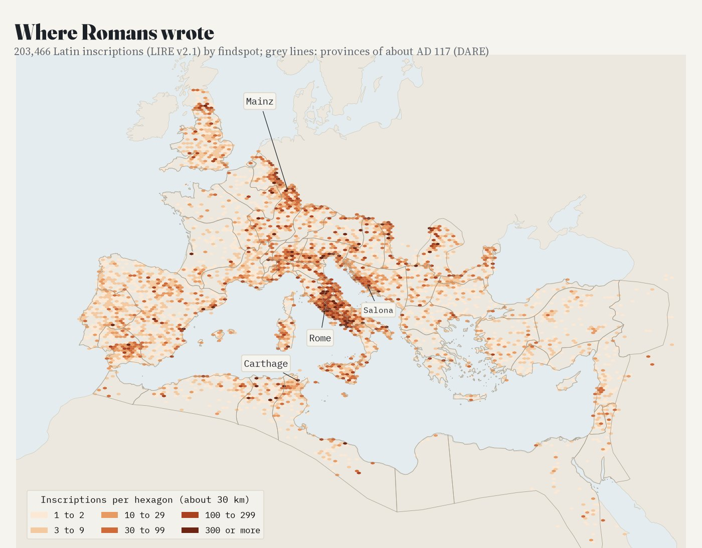
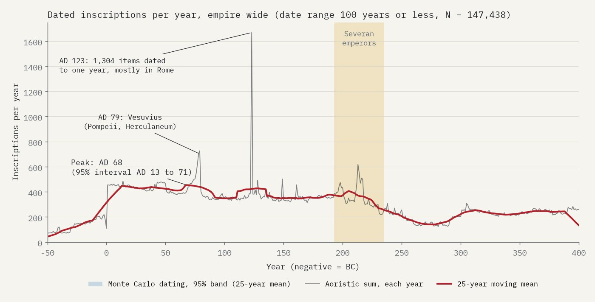
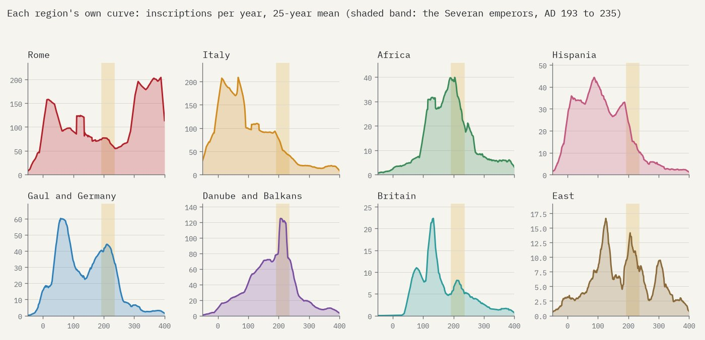
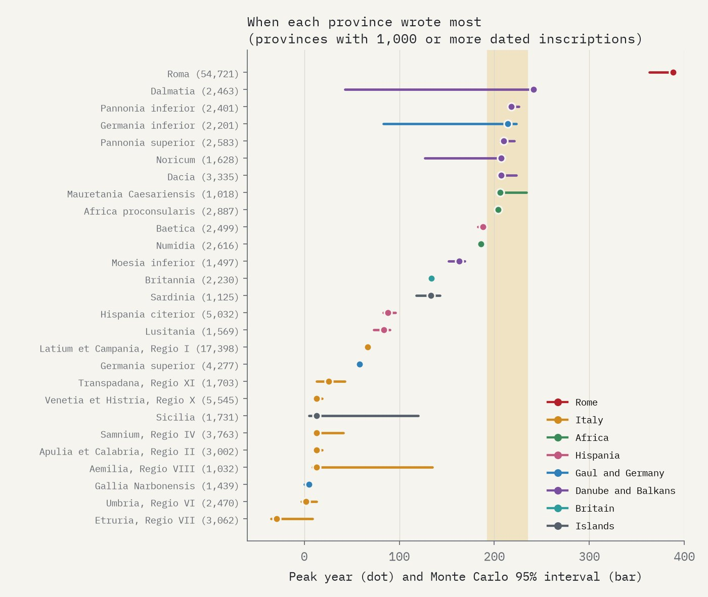
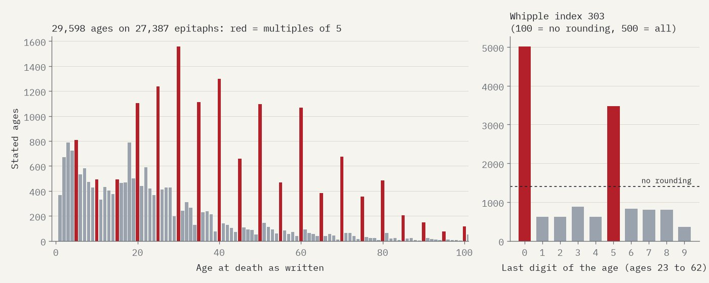
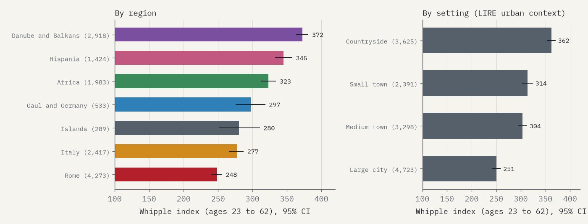
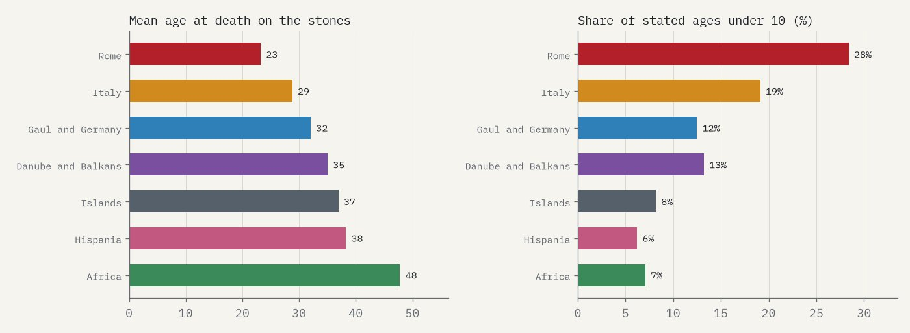
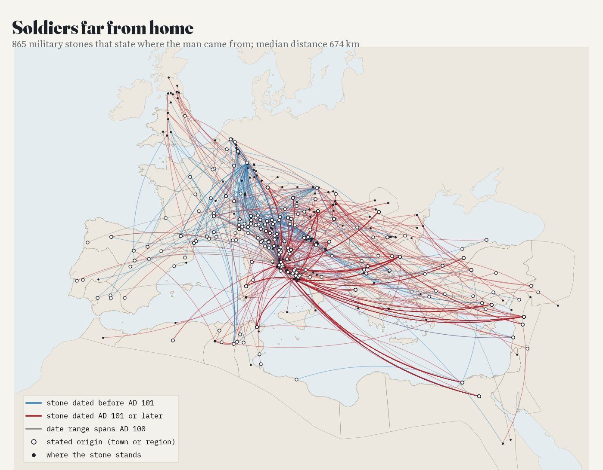
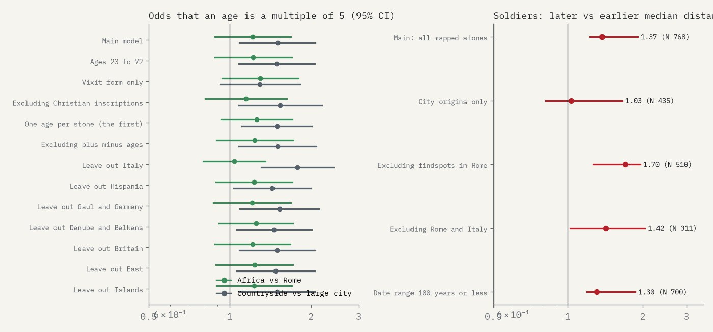

203,466 Latin inscriptions (LIRE) in hexagons about 35 km across, coloured by how many were found there. Slide through time, pick a kind of inscription, switch on the soldiers' journeys, or tap a hexagon.
Latin inscriptions with a findspot and a date overlapping 50 BC to AD 350, from EDCS and EDH as merged in LIRE v2.1. Greek inscriptions are not included, so the eastern provinces look emptier than they were. Findspots record where stones were found and published, not only where they were made.
Romans wrote on stone everywhere: on tombs, altars, statue bases, milestones and the walls of public buildings. The LIRE dataset gathers 203,466 Latin inscriptions from the two great online corpora, each with a findspot and a date range. Put them on one map and through one clock and three old questions come back into focus: when did the Romans write most, how old were the dead, and how far did soldiers travel?
What the map shows: where inscriptions were found, recorded and entered in the databases, not a census of what was carved. Greek inscriptions are not included, so the East looks emptier than it was. Every date is a range set by editors, and a count for a period shares each inscription evenly across its range.
Rome alone has 75,301 inscriptions, 37% of the whole corpus, and with the rest of Italy it holds 61%. Outside Italy the writing follows the army and the cities: the Rhine and Danube frontiers, the coast of Dalmatia around Salona, the towns of Africa around Carthage and the legionary fortress of Lambaesis, and southern Spain. Across the provinces of about AD 117 there are about 26 inscriptions per 1,000 km², excluding the city of Rome; Britain has 28, the Italian region around Rome and Naples 1,379.

Latin inscriptions by findspot, in hexagons about 30 km across; grey lines: provinces of about AD 117 (DARE).
In 1982 Ramsay MacMullen noticed that Latin inscriptions rise through the first and second centuries, peak under the Severan emperors and then fall sharply. With 147,438 inscriptions whose date range is 100 years or less, the fall is plain: the empire produced 2.2 times as many inscriptions a year in 193 to 235 as in 250 to 300 (Monte Carlo interval 2.16 to 2.24). But the empire-wide peak is not Severan. It falls in AD 68 (95% interval AD 13 to 71), because Rome and Italy, which dominate the corpus, wrote most in the first century. Region by region the picture splits: 10 of the 27 provinces with at least 1,000 dated inscriptions peak between AD 175 and 250, among them Africa, Numidia, Dacia, both Pannonias and Lower Germany, while the Italian regions peak between the late first century BC and the later first century AD. Votive inscriptions peak in AD 209, honorific ones in 205, milestones in 247. Press play on the map to watch the writing move from Italy to the frontiers.

Dated inscriptions per year, empire-wide. Two spikes are artefacts of exact dates: Vesuvius in AD 79 and 1,304 items dated to AD 123, mostly stamped bricks and objects in Rome.

Each region's own curve. The late rise in Rome is Christian epitaphs from the catacombs.

Peak year by province, with Monte Carlo intervals.
Many epitaphs give the age of the dead: vixit annis XXX, "lived 30 years". I read 29,598 ages from 27,387 epitaphs. Thirty, forty and fifty are far too common: among ages from 23 to 62, 5,020 end in 0 and 3,474 in 5, against about 1,404 expected for each digit without rounding. The Whipple index is 303 (95% CI 298 to 307). Rounding is lightest in Rome (248) and heaviest in the Danube and Balkan provinces (372); it is heavier in the countryside (362) than in large cities (251), and it grows with age.
Richard Duncan-Jones read age rounding as a sign of how far people knew their exact age, and expected it to be heaviest in Africa. Africa's raw index is indeed higher than Rome's (323 against 248), but once the setting, the age and Christian epitaphs are taken into account the difference is not significant (odds ratio 1.22, 95% CI 0.88 to 1.68). The countryside effect holds in the main model (odds ratio 1.50, 1.09 to 2.07) but not in every check.

Stated ages at death on epitaphs; red: multiples of 5.

Whipple index (ages 23 to 62) with 95% intervals.
Can tombstones tell us how long Romans lived? No, as Keith Hopkins argued in 1966. The mean age on the stones is 23 in Rome and 48 in Africa, a gap no real difference in mortality could make; only 7% of African ages are under 10, against 28% in Rome, when in any pre-modern population a large share of deaths were of young children; and 154 ages on African stones are 100 or more. The stones record who was commemorated, and how, not who died.

Why tombstones are not life tables.
Soldiers' tombstones often say where the man came from: domo Verona, a voting tribe and a town (Pollia Mutina), or a people (natione Bessus, a Thracian). Of 19,484 military inscriptions, 865 (4.4%) state an origin I could place on the map. The median journey is 674 km, and 68% are more than 500 km: the fleet at Misenum and the guard in Rome drew men from Egypt, Thrace, Syria and Pannonia. Switch on "Soldiers' journeys" in the layers.
J. C. Mann and Giovanni Forni showed that recruitment became more local over time. These stones do not show it: those dated after AD 100 have a longer median journey (750 km) than earlier ones (545 km), and among origins given as towns there is no change at all (ratio 1.03, 95% CI 0.81 to 1.65). The likely reason is selection: a man who served near home had little reason to carve his origin, so the stones that state one are a sample of the far-travelled.

Military stones that state an origin; blue: dated before AD 101, red: AD 101 or later.
Data. LIRE v2.1 merges the Epigraphik-Datenbank Clauss/Slaby and the Epigraphic Database Heidelberg and keeps Latin inscriptions with a findspot and a date range overlapping 50 BC to AD 350. Its types (epitaph, votive, honorific...) come from the EDH where it exists and otherwise from the LIRE authors' machine-learning classifier. Time. Each inscription's weight of one is spread evenly over the years of its date range (aoristic analysis); a Monte Carlo version draws one year per inscription, 1,000 times, for intervals. Ages. An age is "annis" or "annorum" followed by an intact Roman numeral, after "vixit" or in the form "annorum N", on epitaphs only, never years of service or marriage; 199 of 200 checked by hand were right. Soldiers. Origins read from "domo", "natione", "civis" or a voting tribe followed by a town, matched to the Digital Atlas of the Roman Empire; every origin used twice or more was checked by eye. The analysis plan, with the tests and what would count against each idea, was pre-specified in a written plan before any result was computed.

Checks: the age-rounding contrasts and the soldiers' distances under the planned alternatives.
What this cannot say. The inscriptions are the ones that survived, were found and were published, so Rome, Italy and well-excavated provinces are over-represented. Dates are editors' ranges, some conventional, and Christian epitaphs are dated late because they are Christian. Ages are what commemorators wrote. Soldiers' origins come from the minority of stones that name one.